Hypergeometric Functions¶
The series:
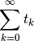
with 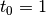
is geometric if the ratio of two consecutive terms  is a constant
(with respect to 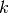):
is a constant
(with respect to 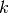):
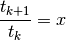
then we get:
It is hypergeometric if the ratio is a rational function (with
respect to ):
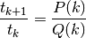
where and 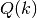 are polynomials in , which we can completely factor into the form
(1)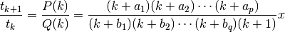
where  is a constant and the 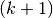 factor is just a convention (if the
polynomial does not contain the factor we can just add it to
both numerator and denominator and absorb the one into 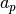). The
hypergeometric series is then given by:
is a constant and the 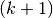 factor is just a convention (if the
polynomial does not contain the factor we can just add it to
both numerator and denominator and absorb the one into 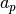). The
hypergeometric series is then given by:
where
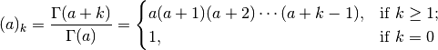
is the rising factorial function (also called the Pochhammer symbol).
To write a function as a hypergeometric series, we simply expand it in series
and then write the ratio in the form (1) and
immediately identify the proper 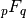 function. If the ratio cannot be
put into the form (1) then the function is not hypergeometric.
Convergence Conditions¶
If any , then the series is a polynomial of degree 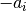.
If any then the denominators eventually become 0 (unless the series is terminated as a polynomial before that, due to the previous point) and the series is undefined.
Except the previous two cases, the radius of convergence  of the
hypergeometric series is:
of the
hypergeometric series is:
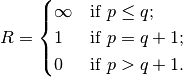
Elementary and Special Functions¶
The hypergeometric functions for low  and
and  have special names:
have special names:
| confluent hypergeometric limit function | |
| Kummer’s confluent hypergeometric function of the first kind | |
| 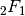 | Gauss’ hypergeometric function |
Most common functions can be expressed using as follows:


The Series 1F1¶
Elementary functions:
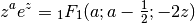
Lower incomplete gamma function:
Error function:
Hermite polynomials:
Laguerre polynomials:
(2)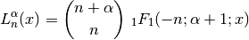
Solution 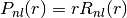 of the radial Schrödinger equation in the Coulomb potential 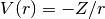 (we use (2) in the second equation below):
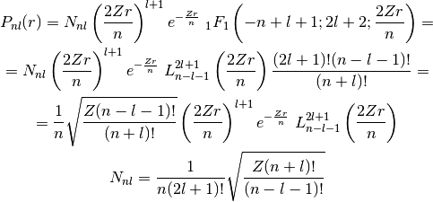
The Series 2F1¶
Elementary functions:
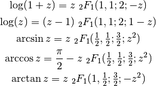
Legendre polynomials:

Chebyshev polynomials:

Complete elliptic integrals:
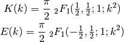

Example I¶
By writing out the series expansion for the ratio we can prove
that:
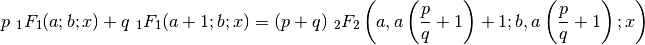
The left hand side is equal to:
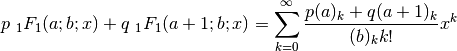
We simplify the 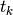 term:
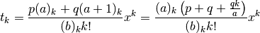
We calculate the ratio as well as  to get the normalization:
to get the normalization:
From which we read the arguments of the hypergeometric function 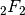 on the right hand side and we need to multiply it by the normalization factor .
Example II¶
By writing out the series expansion for the ratio we can prove
that:
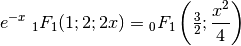
We can also use the substitution 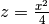:
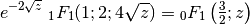
Which is a special case of
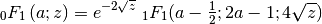
for 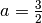.
Example III¶
One way to express 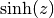 is:
using the previous example, this is equal to:
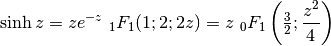
So the lowest hypergeometric function that can express is .